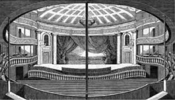
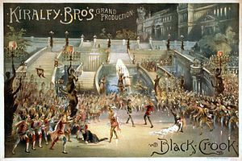
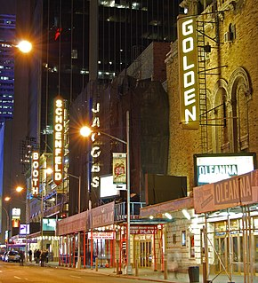

Broadway theatre, or Broadway, are the theatrical performances presented in the 41 professional theatres,
each with 500 or more seats, located in the Theater District and the Lincoln Center along Broadway, in Midtown Manhattan, New York City.
Broadway and London's West End together represent the highest commercial level of live theater in the English-speaking world.


The first theatre piece that conforms to the modern conception of a musical, adding dance and original music that helped to tell the story,
is considered to be The Black Crook, which premiered in New York on September 12, 1866.
The production was five-and-a-half hours long, but despite its length, it ran for a record-breaking 474 performances.
Due to COVID-19 pandemic in the United States, Broadway theaters closed on March 12, 2020,
shuttering 16 shows that were playing or were in the process of opening.
Springsteen on Broadway became the first full-length show to resume performances,
opening on June 26, 2021, to 1,721 vaccinated patrons at the St. James Theatre.
